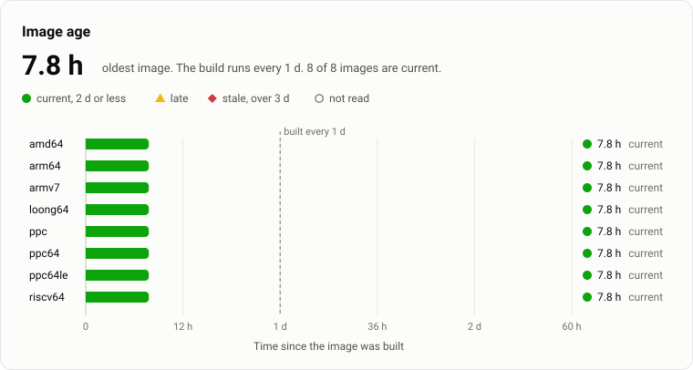
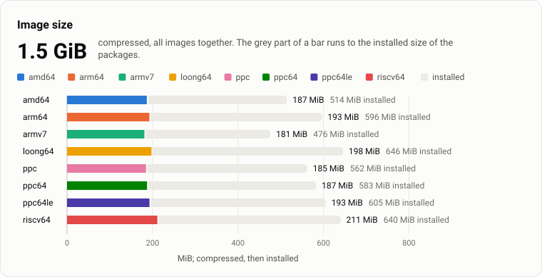
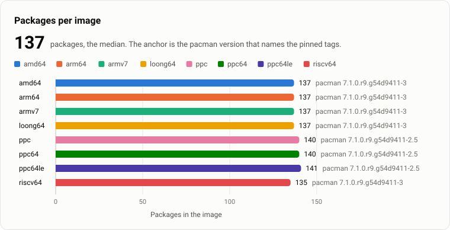
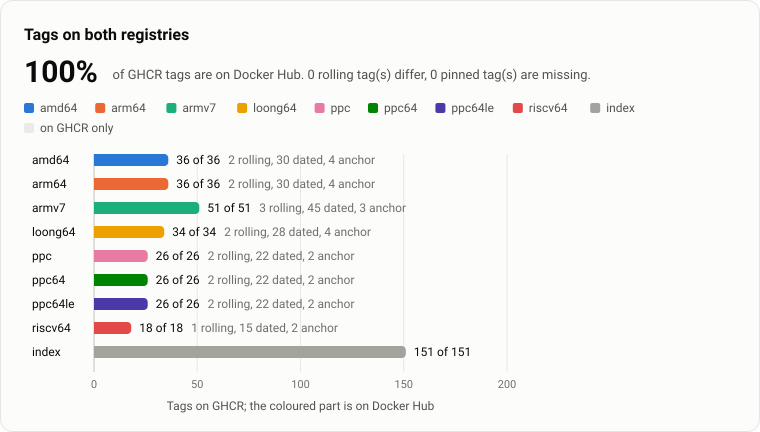
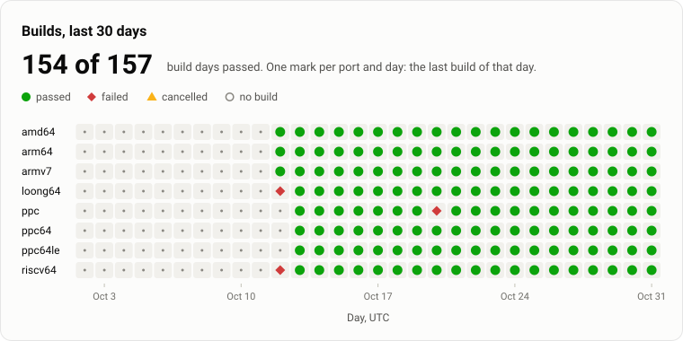
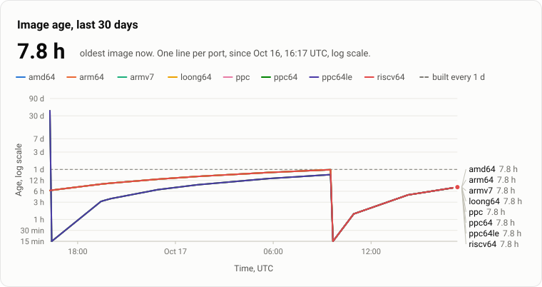
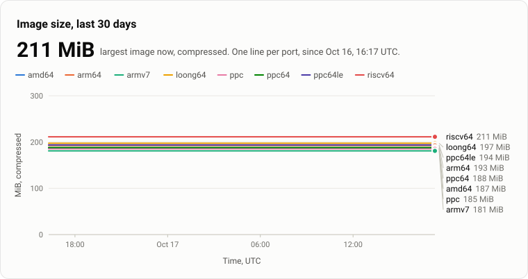

Arch Linux images for 8 architectures, on GHCR and Docker Hub.
8 of 8
images are current: built in the last 2 d. The build runs every 1 d.
docker pull ghcr.io/pkgforge-dev/archlinux:latestdocker pull pkgforge/archlinux:latestA port has a rolling tag for each alias, a tag <alias>-v<date> for each build day, and a tag <alias>-<anchor> for each pacman version. A pinned tag never moves.

| port | state | built | age |
|---|---|---|---|
| amd64 | current | 7.8 h | |
| arm64 | current | 7.8 h | |
| armv7 | current | 7.8 h | |
| loong64 | current | 7.8 h | |
| ppc | current | 7.8 h | |
| ppc64 | current | 7.8 h | |
| ppc64le | current | 7.8 h | |
| riscv64 | current | 7.8 h |

| port | compressed | layers | installed |
|---|---|---|---|
| amd64 | 187 MiB | 4 | 514 MiB |
| arm64 | 193 MiB | 4 | 596 MiB |
| armv7 | 181 MiB | 4 | 476 MiB |
| loong64 | 197 MiB | 4 | 645 MiB |
| ppc | 185 MiB | 4 | 565 MiB |
| ppc64 | 188 MiB | 4 | 589 MiB |
| ppc64le | 194 MiB | 4 | 610 MiB |
| riscv64 | 211 MiB | 4 | 640 MiB |

| port | packages | anchor | download | evidence |
|---|---|---|---|---|
| amd64 | 137 | 7.1.0.r9.g54d9411-3 | 122 MiB | of the published image |
| arm64 | 137 | 7.1.0.r9.g54d9411-3 | 110 MiB | of the published image |
| armv7 | 137 | 7.1.0.r9.g54d9411-2 | 104 MiB | of the published image |
| loong64 | 137 | 7.1.0.r9.g54d9411-3 | 128 MiB | of the published image |
| ppc | 141 | 7.1.0.r9.g54d9411-2.2 | 152 MiB | of the published image |
| ppc64 | 140 | 7.1.0.r9.g54d9411-2.2 | 157 MiB | of the published image |
| ppc64le | 140 | 7.1.0.r9.g54d9411-2.2 | 164 MiB | of the published image |
| riscv64 | 135 | 7.1.0.r9.g54d9411-2.1 | 136 MiB | of the published image |

| port | rolling | dated | anchor | on Docker Hub | on GHCR |
|---|---|---|---|---|---|
| amd64 | 2 | 30 | 4 | 36 | 36 |
| arm64 | 2 | 30 | 4 | 36 | 36 |
| armv7 | 3 | 45 | 3 | 51 | 51 |
| loong64 | 2 | 28 | 4 | 34 | 34 |
| ppc | 2 | 22 | 2 | 26 | 26 |
| ppc64 | 2 | 22 | 2 | 26 | 26 |
| ppc64le | 2 | 22 | 2 | 26 | 26 |
| riscv64 | 1 | 15 | 2 | 18 | 18 |

| port | days passed | days failed | days cancelled | last build day |
|---|---|---|---|---|
| amd64 | 13 | 0 | 0 | 2026-10-17 |
| arm64 | 13 | 0 | 0 | 2026-10-17 |
| armv7 | 13 | 0 | 0 | 2026-10-17 |
| loong64 | 5 | 8 | 0 | 2026-10-17 |
| ppc | 5 | 0 | 0 | 2026-10-17 |
| ppc64 | 5 | 0 | 0 | 2026-10-17 |
| ppc64le | 5 | 0 | 0 | 2026-10-17 |
| riscv64 | 5 | 8 | 0 | 2026-10-17 |

| port | first point | largest age | size now | points |
|---|---|---|---|---|
| amd64 | 23.5 h | 187 MiB | 13 | |
| arm64 | 23.5 h | 193 MiB | 13 | |
| armv7 | 23.5 h | 181 MiB | 13 | |
| loong64 | 23.5 h | 197 MiB | 13 | |
| ppc | 41.3 d | 185 MiB | 13 | |
| ppc64 | 41.3 d | 188 MiB | 13 | |
| ppc64le | 41.3 d | 194 MiB | 13 | |
| riscv64 | 23.5 h | 211 MiB | 13 |

| port | first point | largest age | size now | points |
|---|---|---|---|---|
| amd64 | 23.5 h | 187 MiB | 13 | |
| arm64 | 23.5 h | 193 MiB | 13 | |
| armv7 | 23.5 h | 181 MiB | 13 | |
| loong64 | 23.5 h | 197 MiB | 13 | |
| ppc | 41.3 d | 185 MiB | 13 | |
| ppc64 | 41.3 d | 188 MiB | 13 | |
| ppc64le | 41.3 d | 194 MiB | 13 | |
| riscv64 | 23.5 h | 211 MiB | 13 |
One row per port. The age counts from the created label of the image on GHCR. GHCR and Docker Hub compares the digest of each alias on both registries. The mirror column is the largest lag of the repos of the port in mirror-archlinux.
| port | platform | distribution | aliases | newest dated tag | age | size | packages | anchor | last build | GHCR and Docker Hub | in latest | mirror | badge |
|---|---|---|---|---|---|---|---|---|---|---|---|---|---|
amd64 | linux/amd64 | Arch Linux | x86_64, amd64 | x86_64-v2026.10.17 | 7.8 h, current | 187 MiB | 137 | 7.1.0.r9.g54d9411-3 | passed, 3 min | same digest | yes | current | |
arm64 | linux/arm64 | Arch Linux ARM | aarch64, arm64 | aarch64-v2026.10.17 | 7.8 h, current | 193 MiB | 137 | 7.1.0.r9.g54d9411-3 | passed, 6 min | same digest | yes | current | |
armv7 | linux/arm/v7 | Arch Linux ARM | armv7l, armv7h, armv7 | armv7l-v2026.10.17 | 7.8 h, current | 181 MiB | 137 | 7.1.0.r9.g54d9411-2 | passed, 5 min | same digest | yes | current | |
loong64 | linux/loong64 | Arch Linux for Loong64 (LCPU) | loongarch64, loong64 | loongarch64-v2026.10.17 | 7.8 h, current | 197 MiB | 137 | 7.1.0.r9.g54d9411-3 | passed, 6 min | same digest | yes | behind 2.2 h, 99.9% of files | |
ppc | linux/ppc | ArchPOWER | ppc, powerpc | ppc-v2026.10.17 | 7.8 h, current | 185 MiB | 141 | 7.1.0.r9.g54d9411-2.2 | passed, 5 min | same digest | yes | current | |
ppc64 | linux/ppc64 | ArchPOWER | ppc64, powerpc64 | ppc64-v2026.10.17 | 7.8 h, current | 188 MiB | 140 | 7.1.0.r9.g54d9411-2.2 | passed, 3 min | same digest | yes | current | |
ppc64le | linux/ppc64le | ArchPOWER | ppc64le, powerpc64le | ppc64le-v2026.10.17 | 7.8 h, current | 194 MiB | 140 | 7.1.0.r9.g54d9411-2.2 | passed, 5 min | same digest | yes | current | |
riscv64 | linux/riscv64 | Arch Linux RISC-V | riscv64 | riscv64-v2026.10.17 | 7.8 h, current | 211 MiB | 135 | 7.1.0.r9.g54d9411-2.1 | passed, 5 min | same digest | yes | current |
Docker Hub carries 100% of the GHCR tags: a rolling tag counts when it has the same digest, a pinned tag when it exists. The issue registry-drift opens when this is below 100% in 2 runs in a row.
| tags | on Docker Hub | on GHCR | not in step |
|---|---|---|---|
| rolling tags, same digest | 17 | 17 | none differ |
| pinned tags, present | 387 | 387 | none missing |
The index tag latest carries linux/amd64, linux/arm64, linux/arm/v7, linux/loong64, linux/ppc, linux/ppc64, linux/ppc64le, linux/riscv64. It carries every port. Docker Hub latest has the same digest.
Each port reads its packages through mirror-archlinux first. The record of mirror-archlinux, measured .
| port | target | state | lag | age | coverage |
|---|---|---|---|---|---|
| amd64 | x86_64-core | current | 0 min | 23.1 h | 100% |
| amd64 | x86_64-extra | current | 0 min | 12 min | 100% |
| arm64 | aarch64-core | current | 0 min | 35.2 h | 100% |
| arm64 | aarch64-extra | current | 0 min | 35.2 h | 100% |
| arm64 | aarch64-alarm | current | 0 min | 2.9 d | 100% |
| arm64 | aarch64-aur | current | 0 min | 2.9 d | 100% |
| armv7 | armv7h-core | current | 0 min | 2.9 d | 100% |
| armv7 | armv7h-extra | current | 0 min | 2.5 d | 100% |
| armv7 | armv7h-alarm | current | 0 min | 2.9 d | 100% |
| armv7 | armv7h-aur | current | 0 min | 2.9 d | 100% |
| loong64 | loong64-core | current | 0 min | 1.3 h | 100% |
| loong64 | loong64-extra | behind | 2.2 h | 1.3 h | 99.9% |
| ppc | powerpc-base | current | 0 min | 40.6 h | 100% |
| ppc | powerpc-base-any | current | 0 min | 2.1 d | 100% |
| ppc64 | powerpc64-base | current | 0 min | 37.8 h | 100% |
| ppc64 | powerpc64-base-any | current | 0 min | 2.1 d | 100% |
| ppc64le | powerpc64le-base | current | 0 min | 2.1 d | 100% |
| ppc64le | powerpc64le-base-any | current | 0 min | 2.1 d | 100% |
| riscv64 | riscv64-core | current | 0 min | 23.1 h | 100% |
| riscv64 | riscv64-extra | current | 0 min | 12 min | 100% |
The status workflow writes each badge each hour, and after each build. An age in a badge counts to that measurement. A badge is an image and runs no script, so it shows its age as written.
| badge | URL |
|---|---|
https://pkgforge-dev.github.io/docker-archlinux/badges/amd64.svg | |
https://pkgforge-dev.github.io/docker-archlinux/badges/arm64.svg | |
https://pkgforge-dev.github.io/docker-archlinux/badges/armv7.svg | |
https://pkgforge-dev.github.io/docker-archlinux/badges/loong64.svg | |
https://pkgforge-dev.github.io/docker-archlinux/badges/ppc.svg | |
https://pkgforge-dev.github.io/docker-archlinux/badges/ppc64.svg | |
https://pkgforge-dev.github.io/docker-archlinux/badges/ppc64le.svg | |
https://pkgforge-dev.github.io/docker-archlinux/badges/riscv64.svg | |
https://pkgforge-dev.github.io/docker-archlinux/badges/all.svg | |
https://pkgforge-dev.github.io/docker-archlinux/badges/latest.svg | |
https://pkgforge-dev.github.io/docker-archlinux/badges/registries.svg | |
https://pkgforge-dev.github.io/docker-archlinux/badges/build.svg | |
https://pkgforge-dev.github.io/docker-archlinux/badges/size-amd64.svg | |
https://pkgforge-dev.github.io/docker-archlinux/badges/size-arm64.svg | |
https://pkgforge-dev.github.io/docker-archlinux/badges/size-armv7.svg | |
https://pkgforge-dev.github.io/docker-archlinux/badges/size-loong64.svg | |
https://pkgforge-dev.github.io/docker-archlinux/badges/size-ppc.svg | |
https://pkgforge-dev.github.io/docker-archlinux/badges/size-ppc64.svg | |
https://pkgforge-dev.github.io/docker-archlinux/badges/size-ppc64le.svg | |
https://pkgforge-dev.github.io/docker-archlinux/badges/size-riscv64.svg | |
https://pkgforge-dev.github.io/docker-archlinux/badges/packages-amd64.svg | |
https://pkgforge-dev.github.io/docker-archlinux/badges/packages-arm64.svg | |
https://pkgforge-dev.github.io/docker-archlinux/badges/packages-armv7.svg | |
https://pkgforge-dev.github.io/docker-archlinux/badges/packages-loong64.svg | |
https://pkgforge-dev.github.io/docker-archlinux/badges/packages-ppc.svg | |
https://pkgforge-dev.github.io/docker-archlinux/badges/packages-ppc64.svg | |
https://pkgforge-dev.github.io/docker-archlinux/badges/packages-ppc64le.svg | |
https://pkgforge-dev.github.io/docker-archlinux/badges/packages-riscv64.svg |